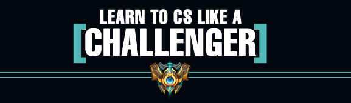

This article will help you understand one of the basic fundamentals of League of Legends - Laning.
So what exactly are lanes and what exactly is the laning phase in League of Legends?

There are three lanes: top, mid, and bot. With the way that the game has evolved, there are conventional types of champions that go to each lane.
Laning is basically the beginning part of the game where champions go into the lanes and try to gain experience and farm gold off of minions. Laning is one of the most crucial aspects of the game, cause without money or levels, what are ya gonna do? The lanes vary pretty widely in terms of what champions go into each lane. Of course, you can theoretically put any champion into any lane, but because of the way League has evolved in terms of optimal strategy, it's ill-advised to do so.
Top: Bruisers (i.e. Mundo, Irelia), Fighters (i.e. Fiora, Jayce), and AP Casters (i.e. Lulu, Rumble)
Mid: AP Casters (i.e. Orianna, Xerath), AD Casters (i.e. Jayce, Yasuo), AP Assassins (i.e. Ahri, Leblanc), and AD Assassins (i.e. Zed)
Bot: Marksmen and Supports
Usually, the lanes follow a 1-1-2 format, with top and mid being the solo lanes and bot encompassing the marksman and the support. Of course, there is the possibility of lane swapping but that's a complex strategy we'll delve into another time.
Now, let's dive into the good stuff shall we? Most importantly, how to win your lane.
Laning can be broken down into seven aspects, all of which factor into your ability in winning and controlling the lane.
- Last hitting
- Harassing and Trading
- Zoning
- Warding
- Pushing
- Backing
Last hitting
Last hitting is basically the concept that whenever you land the killing blow on a minion, you will get gold. The number of minions you've killed is denoted as your creep score (CS) and will be denoted as such from now on. CSing is a vital part of laning and you can usually determine which laner is ahead by the difference in CS between them. Simply improving your ability to CS will give you a much higher chance of climbing up the ladder because more gold = more power = more impact. However, there are a couple things to note when last hitting:
1. Try not to rely too much on using spells to last hit. It is OK to last hit using spells if using that spell was the only way you could get the CS. However, if there's a chance to get that hit using a basic attack, it's usually the better option. The reason for this is because if you try to CS too much relying on spells, then you lose valuable tools to fight back the enemy due to cooldowns and mana (unless you're a mana-less champion).
2. Don't constantly autoattack the wave, unless you are intentionally trying to push the wave. The reason for this is because if you are constantly auto attacking the wave, you're prone to make errors when last hitting, and the wave is most likely going to push towards the enemy turret. This puts you in an unsafe position were the enemy jungler gank you. We'll talk about when constantly autoattacking the wave is a good thing in the Pushing section.There is an exception to this, however. In the start of the laning phase (level 1) it is optimal to slightly out push your opponent, so that you get level 2 first. Getting level 2 first is incredibly vital because the first one to get level 2 gets a huge power spike and is most likely going to severely punish their opponent. Do this by observing your opponent's actions and minions so that you have more minions and the experience advantage.
3. The most optimal last hit is one that also pressures the enemy. What do I mean by this? Basically, I mean that getting the last hit while also harassing the enemy is just about the best thing you can do. This can only be done by using spells to get the and is one of the best uses of your abilities during the laning phase. Try to aim up your spells so that it hits the enemy while an enemy creep is getting low and you've effectively killed two birds with one stone.
4. Last hitting under tower: the general rule of thumb is that it takes two turret shots and an autoattack to kill a melee minion, and one turret shot and an autoattack to kill a ranged minion.
5. Positioning for auto attacks is crucial. If you have to sacrifice a chunk of your HP just to get one cs, you've made a bad trade. If on the defensive, try to last hit at the maximum range you can without getting punished for it.
If you want to just get better at last hitting in general, you have to practice last hitting. I recommend reading Elyndar's guide to CSing like a challenger. 
{kind=link}
Harrassing and Trading
Harassing and trading is a vital tool to win lane dominance. Lane dominance is basically when you have the upper hand, you're on the offensive, and you're pressuring your opponent, forcing them to react to how you play.
So how do you properly harass and trade? Probably the most basic rule of harassing is to harass when your opponent is trying to last hit a minion. Why is this? Because, everybody wants to get gold and thus, they focus on last hitting. While they're focusing on getting that 15 gold for that CS, you can punish them for it and they have less time to trade back because it's much more difficult to harass and last hit simultaneously.
Another fundamental you need to get a grasp of is damage potential. Basically, knowing the amount of damage your champion and the enemy champion is capable of dishing out. If you take more damage than the opponent, then you theoretically lose the trade. A big part of this is based on experience with match ups and knowing how much damage their skills do and their cooldowns.
There are a couple heuristics to determine whether or not you'll win the trade. Basically, you need to look at:
- Their level. Basically, if they are a higher level than you, it's more likely that their spells will deal more damage to you, plus they will generally have higher stats due to the extra level as well
- Their items. One useful tip is to click on the enemy champion to view their items. By viewing your items, you can compare them to your own and see if they have stronger and/or more items than you. If they do, it's advisable to not trade unless you can get free harass off.
- Their health, mana, and pots. If they have lower health and mana than you, it's a good idea to try to trade with them. Because they have a higher risk of dying with each trade, you are theoretically winning the trade. Furthermore, if you have more sustain than them due to pots or lifesteal, it's definitely best to trade as much as possible, as they will be forced into a dangerous position since they have no way of sustaining and they'll eventually get low.
- Their cooldowns. If you see your opponent just use one of their core damage abilities to CS or harass you (in which case you should be harassing back) and they miss, then a window of opportunity opens up for you. You are able to have free reign during that window to harass and receive significantly less damage. Keeping a note of abilities that double count as escapes is especially useful.
Zoning
The term zoning may be unfamiliar to most of the casual playerbase, so I'll help you get a basic understanding of what zoning is. Your zone is basically the area that you "control" with your champion. Zoning is the act of making enemy champions afraid of going into your zone. So how does zoning benefit you? If you can zone the opponent away from his minions, then they will be unable to get any CS and thus be starved of gold. If you are extremely ahead, you can even zone the opponent from getting experience points. Therefore, your opponent will be starved of gold and levels, significantly reducing their power to impact the game. Zoning is typically when you have stronger damage potential, when you have jungle pressure, and when you have vision control.
Let's look at an example. Annie is a champion that has the ability to stun champions every 4th spell cast. However, opponents are able to determine when her next spell will stun. Utilizing this, Annie can walk up to the opponent and her opponent would most likely try to back off, because they know that she will have stronger damage potential, as she will stun them. Thus, they will try to walk out of her zone until they see that her stun has been used up.
Here's a helpful video that will facilitate your understanding of zoning.
Warding
Warding is KEY in League of Legends. Having proper vision control creates a ton of opportunities and prevents opportunities for your opponents as well. So how do you get proper vision control? Well, the best places to ward are the spots that give you the highest potential sight range of common crossing points on the map. Furthermore, it's important to note that when warding, especially when warding in bushes, to place the ward at the tip of the bush. This is due to the fact that wards cannot see past corners, and having it at the tip of the brush will allow it to expose as much vision as possible. It's different for each lane, so let's delve into that.
Pushing
Pushing a lane is the idea of making your minion wave reach the enemy turret. This can be done by constantly auto attacking the enemy minions or using your spells on them so they die faster than your minions, allowing your minions to reach the turret. So what are the benefits of pushing? Well, when your minions are at the enemy turret, this allows you to damage the turret and it makes it harder for your opponent to last hit, as the enemy tower will be attacking your minions. Pushing is the other alternative to zoning when trying to deny farm, and each of them are optimal in their own situations. So when exactly should you push?
Well, there are a few guidelines:
- Right after the enemy laner recalls. Why? Because, if you're able to push out the lane right after the enemy laner recalls, your minions will reach the enemy turret faster, thus allowing more time for the enemy turret to kill your minions, denying the enemy laner from experience and farm.
- When your jungler is invading the enemy jungle. The reason to push is because if you're pushing, you'll generally be closer to the enemy jungler and you'll effectively have free roaming potential, as the enemy laner will be busy trying to farm the minions under their own tower. If they decide to counteract your roam, they'll typically lose the trade as they will lose CS under their tower AND they'll most likely be at a experience disadvantage since you already received the full experience of the wave prior.
- When trying to increase map control. With the same reasoning as above, since you'll have free roam potential, it's a perfect opportunity for you to go and get deep wards into the enemy jungle. Keep in mind, however, that it's generally unsafe to do this unless you already know where the enemy jungler is or if your own jungler is close by to support you in case a skirmish happens.
- When trying to roam to other lanes. With the same reasoning as above, it's much easier to roam to other lanes and get kills when you already have a pushed up minion wave. If your minion wave isn't pushed up and if your roam isn't successful, you will leave yourself in a very undesireable position and likely be very behind due to experience, farm, and turret damage deficits.
Backing
Basically, backing is when you recall to your own base to buy items. Simple enough, right? However, it's more complicated than that. Knowing when to back is an important tool of the laning phase. So, how do you know when to back? Deciding when you should back can also be determined by a few guidelines:
- When your HP is low and you have no sustain left. This may seem the most obvious, but it's important to back whenever you get in this position. Some laners try to stay too long under the tower and keep farming, and then end up not being able to get any farm due to the zone pressure of the enemy laner. This in turn puts them even more behind, and also sets them up for easy deaths due to tower dives. Generally, if you ever notice that your HP is running low and you have no pots left, try to push the wave as fast as possible and then move into a safe place and back immediately.
- When you have enough money to buy a big item or item upgrade. Big items are generally items that grant you a large power spike after obtaining it. A couple examples of these would be chalice, Pickaxe, B.F. sword, Needlessly Large Rod, etc. If you're able to successfully push your lane, back, and buy these items while the enemy laner greedily stays in lane, you'll be at an amazing advantage over them in terms of harassing, trading, and farming. However, it's not advisable to always think of backing as soon as you have enough gold for that item. You need to look for a good opportunity at the right time. A couple of examples of these are when you have pushed up your minion wave, when your resource pools are low, and when it's too dangerous to stay due to pressure from other champions.
I hope that after reading this article, you've gained a better understanding of how lanes work and how to better dominate your lane. I believe that you can definitely get to the next tier if you follow these simple steps!
-Sunar